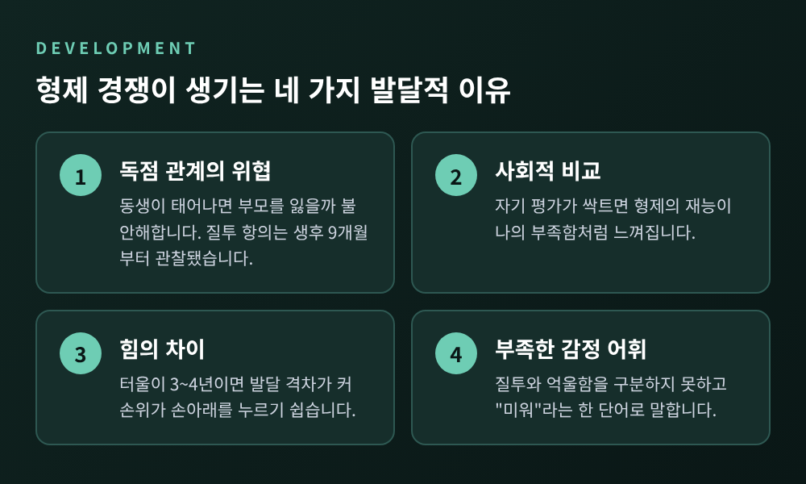
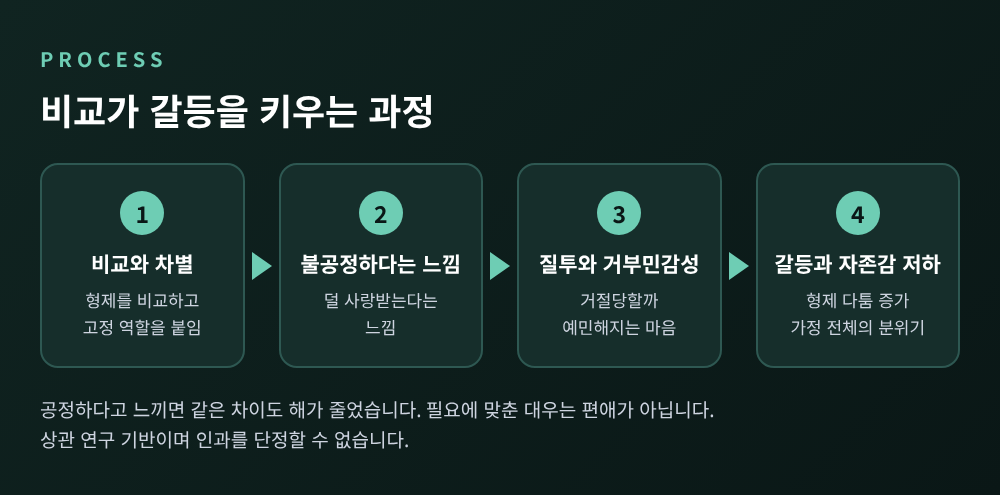
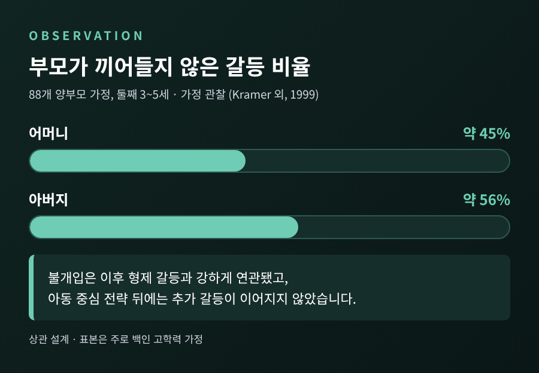
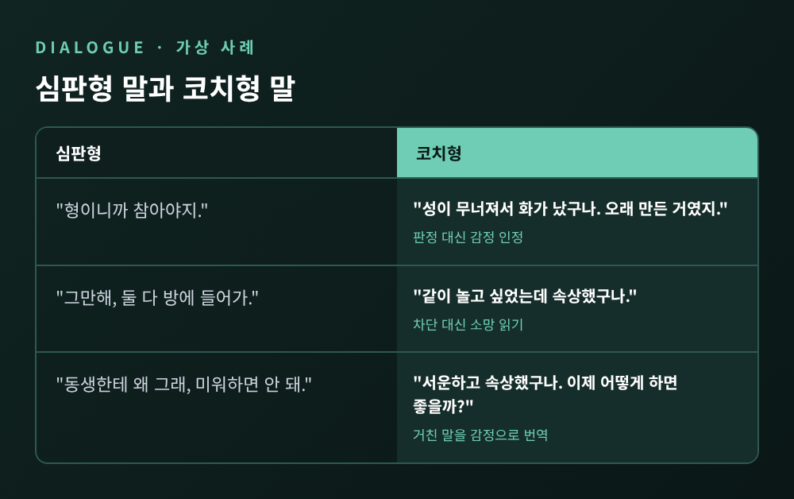
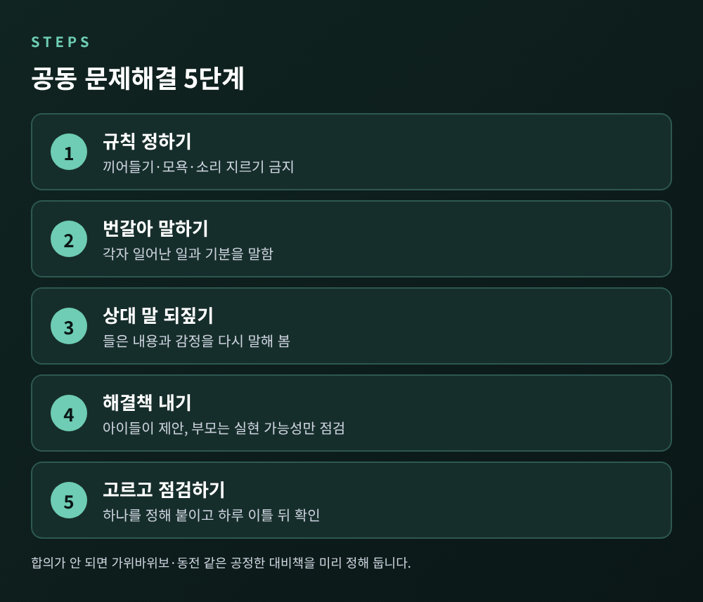

형제자매 갈등 부모 개입법, 중재 대신 감정 인정과 공동 문제해결

아이들의 다툼 앞에서 심판이 아니라 코치가 되는 법
오늘은 형제자매 갈등에서 부모가 어디까지, 어떻게 개입하면 좋은지 이야기해 보려 합니다. 핵심은 한 줄입니다. 누가 잘못했는지 가리는 중재보다, 각자의 감정을 인정하고 함께 해결책을 찾게 돕는 편이 낫다는 것입니다. 발달 배경부터 편애 인식의 영향, 구체적인 대화법까지 연구를 근거로 정리했습니다.
■ 형제 경쟁은 이상 신호가 아니라 발달의 일부입니다
먼저 안심하셔도 되는 부분부터 짚겠습니다. 미국소아과학회(AAP)는 형제 경쟁을 "성장의 자연스러운 일부"로 설명합니다. 장난감 다툼, 고자질, 놀리기, 서로 흠잡기는 흔한 모습입니다.
빈도도 생각보다 잦습니다. 2~4세를 관찰한 연구에서는 한 시간에 평균 7.65회의 분쟁이 있었습니다. 3~7세를 무선 마이크로 기록한 연구에서는 길게 이어진 갈등이 시간당 약 3.5회, 평균 45초였습니다. 4~8세 형제는 한 시간에 최대 여덟 번까지 다툴 수 있다는 보고도 있습니다. 연령과 측정 방식에 따라 3.5회에서 8회 안팎으로 달라지는 셈입니다.
이 다툼의 배경에는 몇 가지 발달적 이유가 있습니다.
- 독점 관계의 위협: 동생이 태어나면 부모를 독차지하던 첫째는 그 자리를 잃을까 불안해합니다. 질투 섞인 항의는 생후 9개월 무렵부터 관찰됐다는 보고도 있습니다.
- 사회적 비교: 자기 평가가 싹트면 형제의 재능이 곧 나의 부족함처럼 느껴집니다.
- 힘의 차이: 터울이 3~4년이면 발달 격차가 커서 손위가 손아래를 쉽게 누릅니다.
- 부족한 감정 어휘: 어린아이는 질투나 억울함을 구분해 말하지 못하고 "미워"라는 한 단어로 뭉뚱그립니다.

한 가지 눈여겨볼 결과가 있습니다. 16개월 때 감정 조절이 서툴고 질투가 컸던 아이는 2년 반 뒤 더 갈등적인 형제 관계를 보였습니다. 일찍 시작된 패턴이 저절로 사라지지는 않는다는 뜻입니다. 그래서 다툼을 방치하기보다 감정을 다루는 법을 가르칠 기회로 보는 시각이 필요합니다.
■ 비교와 편애 인식이 갈등을 키우는 과정
갈등의 불씨를 키우는 쪽은 대개 '공정하지 않다'는 느낌입니다. 같은 대우를 바라는 마음은 만 2세 아이에게서도 확인됩니다.
34개 연구, 12,257명의 아동·청소년을 분석한 메타분석이 있습니다. 형제 사이의 따뜻함이 높고 갈등과 차별적 대우가 적을수록 내재화·외현화 문제가 적었습니다. 세 요인 가운데 갈등의 연관이 가장 강했습니다. 연관은 청소년보다 아동에서, 터울이 가까울수록 더 컸습니다. 다만 상관 연구이므로 원인과 결과를 단정할 수는 없습니다.
흥미로운 점은 '차이' 자체가 문제는 아니라는 것입니다. 청소년은 형제의 고유한 필요에 맞춘 다른 대우를 받아들였고, 그때는 부정적 영향이 줄었습니다. 부모의 차별이 공정하다고 판단될 때는 질투가 부적응으로 이어지지 않았고, 불공정하다고 느낄 때는 우울과 낮은 자기가치로 이어졌습니다. 아이가 몸이 아파 더 챙기는 것은 편애가 아닙니다. AAP도 개별 필요에 맞춘 다른 대우는 편애가 아니라고 말합니다.
그렇다면 비교는 어떨까요. AAP는 형제를 비교하면 아이가 덜 특별하고 덜 사랑받는다고 느낄 수 있다고 설명합니다. 『Siblings Without Rivalry』를 요약한 자료도 좋거나 나쁜 쪽 모두의 비교와, '똑똑한 아이'와 '말썽꾸러기' 같은 고정된 역할 부여를 피하라고 권합니다.
한국 연구도 하나 참고할 만합니다. 형제 169명을 조사한 2018년 연구에서는, 어느 쪽이 선호되는지가 아니라 가정 전체의 편애 수준이 높을수록 자존감이 낮았습니다. 그 사이를 거부민감성, 곧 거절당할까 예민해지는 마음이 이어 주었습니다. 선호된 형제와 그렇지 않은 형제 사이의 자존감 차이는 유의하지 않았습니다. 편애가 '당한 쪽'만의 상처가 아니라 집안 분위기 전체의 문제일 수 있다는 해석이 가능합니다. 다만 표본이 작은 상관 연구입니다.
2025년의 메타분석(30편, 19,469명)은 부모가 아들보다 딸을, 성실한 자녀를 더 호의적으로 대하는 경향을 보고했습니다. 이 또한 부모가 그렇게 대하는 이유를 설명하지는 못합니다. 부모 스스로 모르는 사이 한쪽으로 기울 수 있다는 점만 시사합니다.

■ 한 가정의 장면: 가상 사례로 보는 개입의 차이
아래는 연구 내용을 이해하기 쉽게 구성한 가상 사례입니다. 특정 가정과는 무관합니다.
일곱 살 첫째가 만든 블록 성을 다섯 살 동생이 무너뜨렸습니다. 첫째는 소리를 지르고, 동생은 울며 "형 미워"라고 외칩니다. 이때 많은 부모가 이렇게 말합니다. "형이니까 참아야지." 혹은 "그만 해, 둘 다 방에 들어가."
이 말들에는 공통점이 있습니다. 누가 옳은지 판정하거나 상황을 끊을 뿐, 아이의 마음은 다루지 않습니다. 첫째는 '나만 늘 양보한다'는 불공정함을, 동생은 '내 감정은 중요하지 않다'는 느낌을 얻습니다.
■ 부모는 어떻게 반응하는가: 관찰 연구가 보여준 것
88개 가정을 관찰한 대표적인 연구가 있습니다. 둘째가 3~5세, 첫째가 2~4년 위인 가정에서 부모의 반응을 세 가지로 나누었습니다. 개입하지 않는 것, 아이의 감정과 문제해결을 돕는 아동 중심 개입, 힘으로 멈추게 하는 통제입니다.
가장 흔한 반응은 불개입이었습니다. 어머니는 갈등의 약 45%, 아버지는 약 56%에서 개입하지 않았습니다. 그리고 불개입은 이후의 형제 갈등 발생과 강하게 연관됐습니다. 반면 아동 중심 전략 뒤에는 추가 갈등이 이어지지 않았습니다.

해석에는 조심할 점이 있습니다. 첫째, 갈등은 아동 중심이나 통제 개입 뒤에 가장 오래 이어졌고 부모가 빠지면 가장 짧았습니다. 짧다고 해서 해결된 것은 아닙니다. 둘째, 나이가 많은 쌍에서는 어머니의 통제나 아동 중심 개입이 형제 간 따뜻함 감소와 연관됐습니다. 연령이 높을수록 개입의 효과가 약해질 수 있다는 뜻입니다. 셋째, 이 연구는 상관 설계이고 표본이 주로 백인 고학력 가정이어서 인과를 말할 수 없습니다.
한편 부모가 개입해야 하는지에 대한 권고는 갈립니다. AAP는 대체로 편들지 말고 아이들이 스스로 풀도록 두되, 폭력이 있으면 개입하라고 합니다. 반면 형제 연구자인 로리 크레이머 교수는 특히 8세 미만에서 개입을 권합니다. 아예 손대지 않으면 아이들이 부모가 싸움을 용인한다고 받아들일 수 있다는 이유입니다. 부모가 소극적 불개입을 가장 효과 없다고 평가하면서도 가장 많이 쓴다는 보고도 있습니다. 저는 이렇게 읽습니다. 아이가 어릴수록, 갈등이 격할수록 더 도와주고, 자랄수록 한 걸음 물러서는 것이 안전합니다.
■ 중재 대신 감정 인정으로 시작하기
그렇다면 무엇을 해야 할까요. 크레이머 교수가 권하는 방향은 심판이 아니라 코치입니다. 그 첫걸음이 감정 인정입니다.
- 감정에 이름 붙이기: "화가 났구나", "속상했겠다"처럼 느낌 단어로 먼저 받아 줍니다. 『Siblings Without Rivalry』 요약에서도 가장 먼저 권하는 단계입니다.
- 거친 말을 감정으로 번역하기: "미워"를 "속상하고 서운했구나"로 바꾸어 불러 줍니다. 어린아이의 부족한 감정 어휘를 채워 주는 일입니다.
- 둘 다 인정하기: "네 입장에서 보면, 내 입장에서 보면"을 번갈아 말하며 모든 감정을 인정합니다. 크레이머 교수가 쓰는 표현은 "see it your way, see it my way"입니다.
- 판정하지 않기: 누가 옳고 그른지 가리지 않습니다. 그래야 원망이 쌓이지 않는다고 합니다.
앞의 장면에 적용하면 이렇습니다.
"성이 무너져서 화가 났구나. 오래 만든 거였지." (첫째에게)
"같이 놀고 싶었는데 속상했구나." (동생에게)
여기서 중요한 것은 행동은 제한하되 감정은 인정한다는 점입니다. 던지거나 때리는 일은 막아야 합니다. 신체 싸움이라면 일단 멈추고, 각자 다른 쪽으로 가서 가라앉히도록 돕습니다.

■ 감정이 가라앉으면 함께 해결책 찾기
감정이 어느 정도 풀리면 문제해결로 넘어갑니다. 연구자들이 소개하는 과정을 다음처럼 정리할 수 있습니다.
- 규칙 정하기: 끼어들지 않기, 모욕하지 않기, 소리 지르지 않기 같은 기본 규칙에 합의합니다.
- 번갈아 말하기: 각자 무슨 일이 있었고 어떤 기분이었는지 말합니다.
- 상대의 말 되짚기: 상대가 말한 내용과 감정을 다시 말해 보게 합니다. 관점 이해의 연습입니다.
- 해결책 내기: 아이들이 방법을 내고, 부모는 실현 가능한지만 점검합니다. 모두가 동의하지 않은 안은 지웁니다.
- 하나 고르고 점검하기: 하나를 정해 눈에 띄는 곳에 붙이고, 하루 이틀 뒤 잘 되는지 확인합니다. 안 되면 다른 안을 시도합니다.
합의가 되지 않을 때를 위한 공정한 대비책도 미리 정해 두면 좋습니다. 가위바위보나 동전 던지기 같은 방법입니다. 블록 성 사례라면 '만든 사람이 허락한 블록만 만지기', '동생에게는 따로 쌓을 블록 상자 마련하기' 같은 해결책이 나올 수 있습니다. 해결책의 질보다 아이들이 직접 정했다는 경험이 중요합니다.

이 방식의 근거도 짚어 두겠습니다. 4~8세를 위한 프로그램 'More Fun with Sisters and Brothers'를 무선 배정으로 검증한 연구에서, 84가정 중 개입군 부모는 형제 간 따뜻함이 늘고 갈등이 줄었다고 보고했습니다. 어머니의 정서조절도 개선됐습니다. 이후 온라인판 연구에서는 효과가 수개월 유지됐습니다. 아이들은 이 기술을 빨리 배워 이후에는 부모가 상기시키고 안내하는 정도로 충분해진다고 합니다.
이 연구들에는 분명한 한계가 있습니다. 참가자의 82~91%가 유럽계 미국인이었고 대체로 중산층이었습니다. 효과도 부모 보고에 근거했고, 따뜻함에 대한 직접 효과는 통계적으로 유의하지 않았습니다. 한국 가정에 그대로 적용된다고 단정할 수 없습니다. 서구 표본의 결과라는 점을 염두에 두고, 우리 집 아이의 기질과 상황에 맞게 조정해 보시길 권합니다.
■ 일상에서 할 수 있는 예방
갈등이 터진 뒤의 대화보다 쌓이지 않게 하는 쪽이 쉽습니다.
- 아이마다 매일 따로 시간을 냅니다. 청소나 심부름을 함께하는 짧은 시간이어도 괜찮다고 합니다.
- 아이들 앞에서 서로의 차이를 평가하지 않습니다. 각자가 특별하다는 말을 해 줍니다.
- 다르게 대할 때는 이유를 설명합니다. 필요에 맞춘 차이는 공정함의 다른 모습입니다.
- 혼내거나 벌주는 일은 형제 앞이 아니라 따로 합니다.
- 잘 풀었을 때 구체적으로 칭찬합니다. "화났는데도 차분히 말해 줘서 고마워."
■ 이런 경우에는 전문가와 상의하세요
대부분의 형제 다툼은 발달의 과정입니다. 그러나 반복적인 신체 폭력이 있거나, 한 아이가 지속적으로 괴롭힘을 당하거나, 아이가 위축되어 학교생활과 수면, 식사에 변화가 생긴다면 혼자 감당하지 않으셔도 됩니다. 소아청소년과나 아동·가족 상담 전문가와 상의해 보시길 권합니다. 이 글은 일반적인 정보이며 개별 가정의 진단이나 치료를 대신하지 않습니다.
정리하면 이렇습니다. 형제 갈등은 없애야 할 문제라기보다, 감정과 협상을 배우는 연습장에 가깝습니다. 부모의 역할은 판결이 아니라 동행입니다.
"누가 옳은가보다, 각자의 마음이 들렸는가를 먼저 묻는 것."
오늘 저녁 아이들이 다시 다툰다면, 판정 대신 감정 한 문장을 먼저 건네 보시길 바랍니다. 그 한 문장이 쌓인 집에서 자란 아이들은 어떤 어른이 될까요. 저는 서로의 편에 설 줄 아는 어른이 되리라고 생각합니다.
참고 자료: Kramer 외 (1999, Child Development), Kramer (2018), Buist 외 (2013), Ravindran 외 (2015), Jensen & Jorgensen-Wells (2025, Psychological Bulletin), 설경옥·김유나 (2018), AAP HealthyChildren.org, Northeastern Global News (2020, 2024), Greater Good Magazine, NDSU Extension.